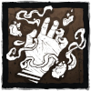
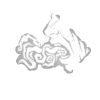

A ENFERMEIRA
Usando seu Teletransporte, a Enfermeira consegue se deslocar por grandes distâncias num piscar de olho, prevendo e obstruindo as rotas dos Sobreviventes. Um processo poderoso, melhor refinado pela experiência, o uso imprudente de Teletransportes é punido por um surto de fadiga.
O auge das mecânicas de alto risco e alta recompensa, a Enfermeira pode encerrar perseguições com precisão cirúrgica.
Raio de Terror: 32m
Velocidade: 3.8 m/s
Altura: Média
Poder:
Último Suspiro de Spencer

Carregue um Teletransporte para se deslocar a uma grande distância, ganhando rapidamente a possibilidade de carregar um segundo Teletransporte.
Quando todos os Teletransportes estiverem gastos, a Enfermeira pode escolher atacar antes que seja acometida brevemente de fadiga.
VANTAGENS
Estridor |
Ouça a respiração e os gemidos de dor dos Sobreviventes mais altos do que nunca. |
Tanatofobia |
Cada Sobrevivente ferido inflige uma penalidade à velocidade de reparo, purificação e sabotagem de todos os Sobreviventes. |
Chamado da Enfermeira
|
Revele a aura de todos os Sobreviventes se curando perto de você. |